WSS推荐系统学习笔记1：概要
1 评价推荐系统的指标
1.1 消费指标
- 点击率 = 点击次数 / 曝光次数
- 点赞率 = 点赞次数 / 点击次数
- 收藏率 = 收藏次数 / 点击次数
- 转发率 = 转发次数 / 点击次数
- 阅读完成率 = 滑动到底次数 / 点击次数 × f(笔记长度)
上面只是短期消费指标，不是最重要的指标。衡量推荐系统的好坏最重要的指标是北极星指标。
1.2 北极星指标
北极星指标是衡量推荐系统好坏的根本指标。
- 用户规模：日活用户数（DAU）、月活用户数（MAU）
- 消费：人均使用推荐的时长、人均阅读笔记的数量
- 发布：发布渗透率、人均发布量
2 实验流程
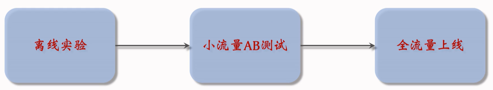
离线实验： 收集历史数据，在历史数据上做训练、测试。算法没有部署到产品中，没有跟用户交互。
小流量AB测试：把算法部署到实际产品中，用户实际跟算法做交互。
3 推荐系统的链路
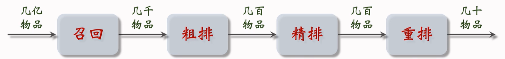
推荐系统的目标是从几亿个物品中选出几十个物品展示给用户。
3.1 召回
有很多召回通道，快速从上亿篇笔记中取出几千篇笔记，作为候选集。
召回通道：协同过滤、双塔模型、关注的作者等等。
3.2 粗排、精排
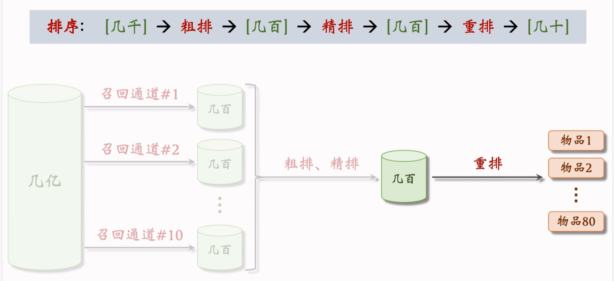
首先是粗排，用小规模的神经网络给几千篇笔记打分，选出分数最高的几百篇。之后是精排，用大规模神经网络给几百篇笔记打分。
精排和粗排十分相似，唯一的区别就是精排的模型更大，用的特征更多。
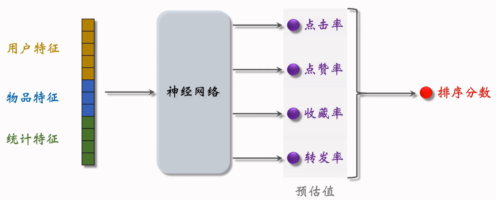
首先把特征送入神经网络，之后输出很多数值，比如点击率、点赞率、收藏率和转发率。这些数值都是神经网络对用户行为的预估，数值越大，说明用户对笔记越感兴趣。
最后对数值进行加权和，得到分数，这个分数决定了这个笔记是否会展示给用户，以及笔记展示的位置靠前还是靠后。
3.3 重排
重排最重要的功能是做多样性抽样（比如MMR、DPP），从几百篇中选出几十篇。抽样的时候有2个依据，一个是精排的分数，另一个是多样性。做完抽样之后，会用规则打散相似笔记。
重排的另一个目的是插入广告和运营推广内容，根据生态要求调整顺序。重排的规则比较复杂。
4 A/B测试
所有对模型和策略的改进都需要通过 A/B 测试，用实验数据来验证模型和策略是否有效。
召回团队实现了一种 GNN 召回通道，离线实验结果正向。下一步是做线上的小流量 A/B 测试，考察新的召回通道对线上指标的影响。模型中有一些参数，比如 GNN 的深度取值 ，需要用 A/B 测试选取最优参数。
4.1 随机分桶
分 个桶，每个桶中有 10% 的用户。首先用哈希函数把用户 ID 映射成某个区间内的整数，然后把这些整数均匀随机分成 个桶。
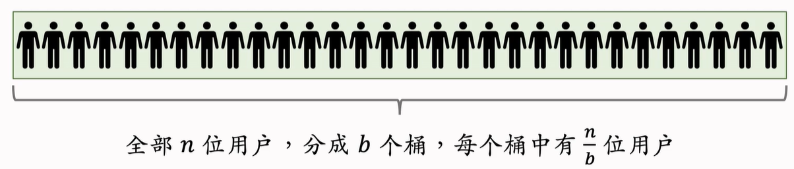
计算每个桶的业务指标，比如 DAU、人均使用推荐的时长点击率等等。如果某个实验组指标显著优于对照组，则说明对应的策略有效，值得推全。
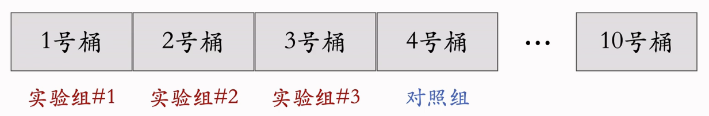
4.2 分层实验
信息流产品的公司有很多部门和团队，大家都需要做 A/B 测试。
- 推荐系统（召回、粗排、精排、重排）
- 用户界面
- 广告
如果把用户随机分成 10 组，1 组做对照，9 组做实验，那么只能同时做 9 组实验。会遇到流量不够用的情况，这时可以使用分层实验来进行解决。
**分层实验：**召回、粗排、精排、重排、用户界面、广告（例如 GNN 召回通道属于召回层）。
**同层互斥：**GNN 实验占了召回层的 4 个桶，其他召回实验只能用剩余的 6 个桶。
**不同层正交：**每⼀层独⽴随机对用户做分桶。每⼀层都可以独立用 100% 的用户做实验。
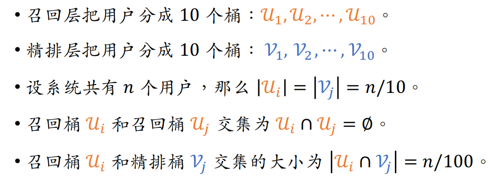
4.2.1 同层互斥
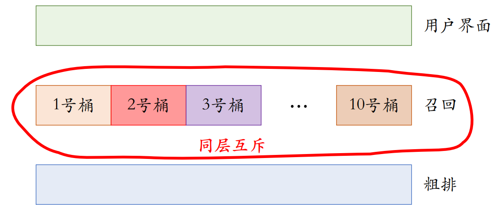
4.2.2 不同层正交
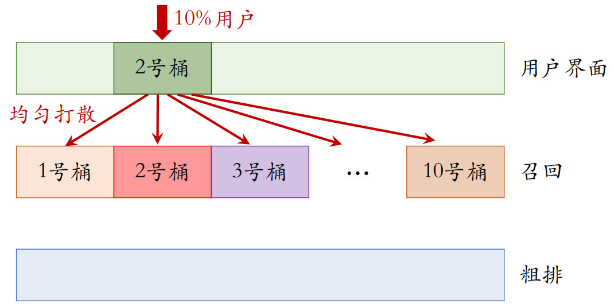
4.3 互斥 vs 正交
如果所有实验都正交，则可以同时做无数组实验。
同类的策略（例如精排模型的两种结构）天然互斥，对于⼀个用户，只能用其中⼀种。
同类的策略（例如添加两条召回通道）效果会相互增强（）或相互抵消（）。互斥可以避免同类策略相互⼲扰。
不同类型的策略（例如添加召回通道、优化粗排模型）通常不会相互干扰（），可以作为正交的两层。
4.4 Holdout机制
每个实验（召回、粗排、精排、重排）独立汇报对业务指标的提升。公司考察⼀个部门（比如推荐系统）在⼀段时间内对业务指标总体的提升。
取 10% 的用户作为 holdout 桶，推荐系统使用剩余90%的用户做实验，两者互斥。
10% holdout 桶 vs 90% 实验桶的 diff（需要归一化）为整个部门的业务指标收益。
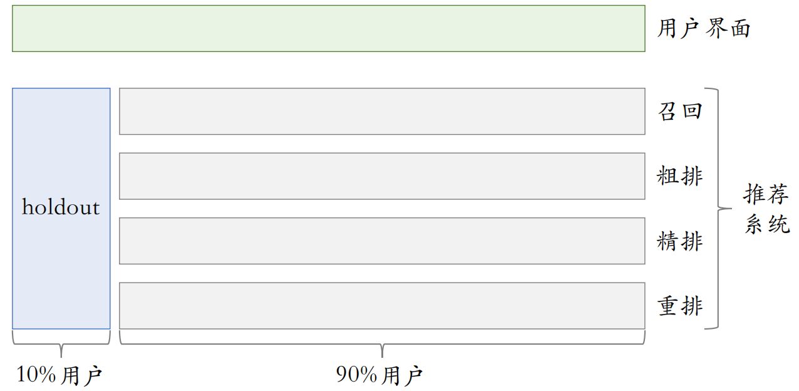
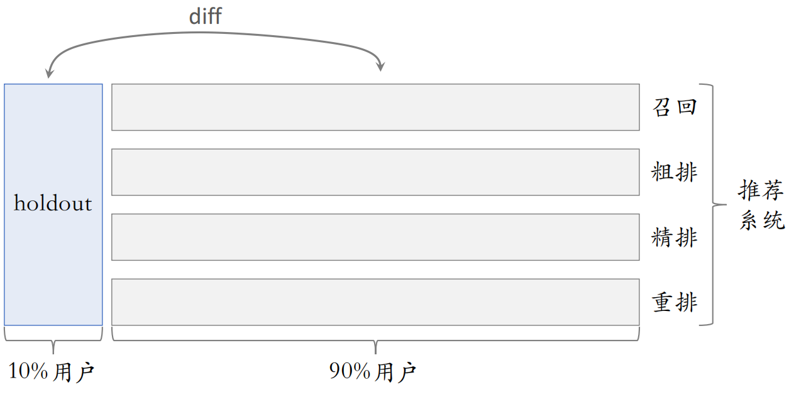
每个考核周期结束之后，清除 holdout 桶，让推全实验从 90% 用户扩大到 100% 用户。重新随机划分用户，得到 holdout 桶和实验桶，开始下⼀轮考核周期。
新的 holdout 桶与实验桶各种业务指标的 diff 接近 0。随着召回、粗排、精排、重排实验上线和推全，diff会逐渐扩大。
4.5 实验推全和反转实验
4.5.1 实验推全
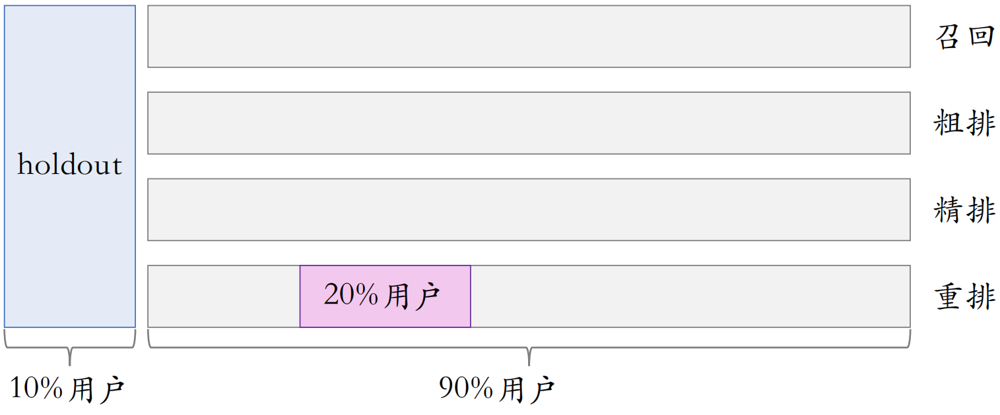
推荐系统中所有业务都是从小流量开始的，如果推荐系统中所有diff正向，则可以推全。例如，首先在20%的用户进行测试，如果有效，则把这个实验给关掉。之后新开一层。
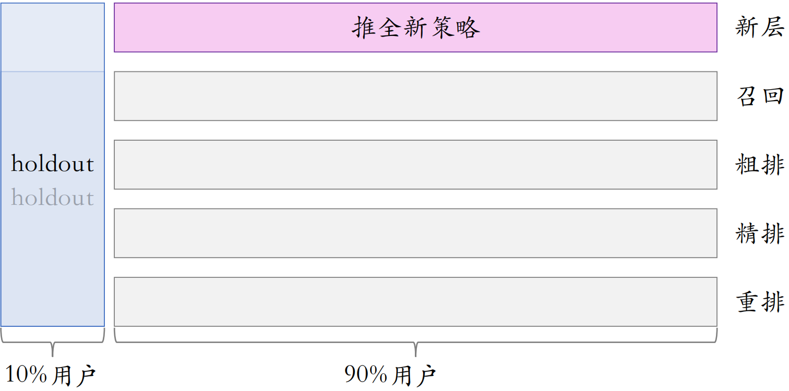
小流量测试时，新策略只作用于20%的用户，会微弱的提升实验桶和holdout桶的diff。推全之后，新策略作用于90%的用户，会将这个diff扩大9倍。
4.5.2 反转实验
有的指标（点击、交互）立刻受到新策略影响，有的指标（留存）有滞后性，需要长期观测。
实验观测到显著收益后尽快推全新策略。目的是腾出桶供其他实验使用，或需要基于新策略做后续的开发。
用反转实验解决上述矛盾，既可以尽快推全，也可以长期观测实验指标。具体做法是在推全的新层中开一个旧策略的桶，长期观测实验指标。
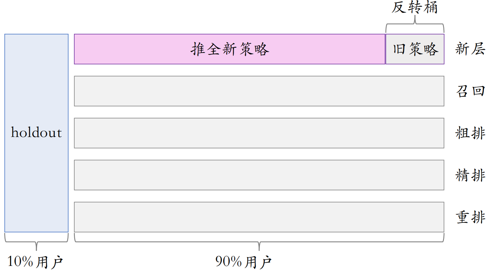
可以把反转桶保留很久，长期观察新策略与旧策略的diff。
5 总结
分层实验：同层互斥（不允许两个实验同时影响⼀位用户）、不同层正交（实验有重叠的用户）。
Holdout：保留 10% 的用户，完全不受实验影响，可以考察整个部门对业务指标的贡献。
实验推全：新建⼀个推全层，与其他层正交。
反转实验：在新的推全层上，保留⼀个⼩的反转桶，使用旧策略。长期观测新旧策略的 diff。
 微信
微信 支付宝
支付宝